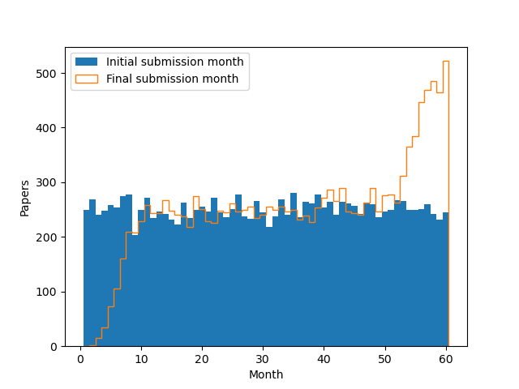

Curious trends in arXiv submission data
There was a curious discussion at Peter Woit's blog concerning recent arXiv submission trends. It was observed (after some initial confusion) that the number of revisions appeared to have increased dramatically in the last month or so.
An (AI generated) analysis, available on GitHub, confirmed this pattern. The data look like this.

What causes that surge in revisions (red) versus posts (blue)? This recent trend appears in all arXiv categories. The AI declares that it is a real trend and speculates that authors are submitting revisions using generative AI tools. I'm naturally skeptical, so thought someone should least build a statistical model of what this plot might look like, assuming nothing but a stationary process.
So I did. I took submissions per month to be about 250 $$ n \sim \textrm{Po}(250) $$ and assumed that authors posted a revision upon publication to match the published version, about six months later, $$ d \sim \textrm{Po}(6) $$ What do you know?
In the current month (here month 60), you see the first submissions (that haven't been replaced yet) and revisions (from papers from previous months). In past months, you only see revisions, as the first submissions are later replaced.
This was an interesting example of a stationary that process produces a mirage of non-stationary behaviour (a surge in the current month). The explanation about AI revisions is unwarranted. On the other hand, there is almost certainly non-stationary behavior in the dataset, as, e.g., the number of academics has increased over time.
Don't take my word for it, of course. Run it yourself. I'd love to see a Bayesian analysis that constructed a principled model and fitted it to the actual data.
"""
arXiv submission patterns
=========================
"""
import numpy as np
import matplotlib.pyplot as plt
rate_per_month = 250
publication_time_months = 6
end_month = 60 # 5 years
def simulate():
# make papers
initial = []
for i in range(end_month):
initial += np.random.poisson(rate_per_month) * [i + 1]
# now post a new version after publication some time later
published = [a + np.random.poisson(publication_time_months)
for a in initial]
# final update before end of simulation
final = [b if b <= end_month else a for a, b in zip(initial, published)]
return initial, final
if __name__ == "__main__":
initial, final = simulate()
bins = np.arange(0.5, end_month + 1, 1)
plt.hist(initial, bins=bins, label="Initial submission month")
plt.hist(final, bins=bins, histtype="step", label="Final submission month")
plt.legend()
plt.xlabel("Month")
plt.ylabel("Papers")
plt.savefig("arxiv.png")
Tags: code, ai, arxiv, statistics